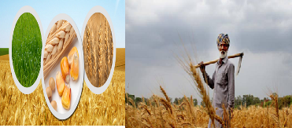
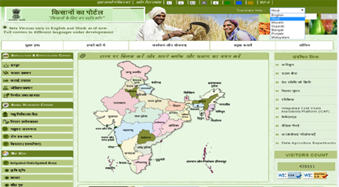
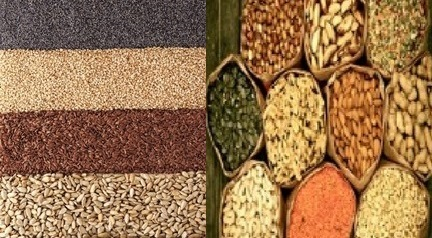
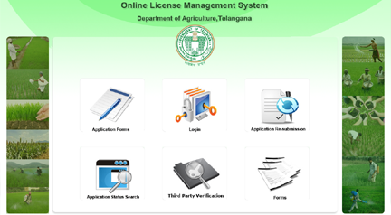

Telangana Agri Portal

AGRISNET

GOI Farmer Portal
GOI Agriculture Cooperation & FW Portal

Online Seed Distribution
Vaddi Leni Panta Runalu

OLMS
LG Directory
Soil Health Card
National Food Security Mission(NFSM)
mKisan
Crop Insurance